전자계산기기사 (2016-03-06 기출문제)
1과목: 시스템 프로그래밍
1. 어떤 내용에 -1을 곱하여 2의 보수로 만들때가 있다. 레지스터에 기억된 내용을 2의 보수로 바꾸어 주는 어셈블리 명령은?
- CBW
- MUL
- NEG
- SUB
(정답률: 67%)

2. 프로그램 실행을 위하여 메모리 내에 기억 공간을 확보하는 작업은?
- allocation
- compile
- linking
- loading
(정답률: 77%)
3. 어셈블리어에 대한 설명으로 옳지 않은 것은?
- 명령기능을 쉽게 연상할 수 있는 기호를 기계어와 1:1로 대응시켜 코드화한 기호언어이다.
- 어셈블리어의 기본 동작은 동일하지만 작성한 CPU마다 사용되는 어셈블리어가 다를 수 있다.
- 어셈블리어로 작성한 원시 프로그램은운영체제가 직접 어셈블한다.
- 프로그램에 기호화된 명령 및 주소를 사용한다.
(정답률: 75%)
4. 어셈블리어에서 라이브러리에 기억된 내용을 프로시저로 정의하여 서브루틴으로 사용하는 것과 같이 사용할 수 있도록 그 내용을 현재의 프로그램 내에 포함시켜주는 명령은?
- EVEN
- ORG
- EJECT
- INCLUDE
(정답률: 83%)
5. 어셈블리에서 어떤 기호적 이름에 상수 값을 할당하는 명령어는?
- ASSUME
- EQU
- INCLUDE
- INT
(정답률: 75%)
6. 어셈블러가 Source Program을 Object Program으로 번역할 때 현재의 Operand에 있는 값을 다음 명령어의 번지로 할당하는 명령은?
- ORG
- EVEN
- INCLUDE
- DREF
(정답률: 74%)
7. 어셈블러를 이중 패스(Two Pass)로 구성하는 주된 이유는?
- 어셈블러의 크기
- 오류 처리
- 전향 참조(Forward Reference)
- 다양한 출력 정보
(정답률: 79%)
8. 프로그램의 소스 코드가 실제 수행되기까지의 순서로 옳은 것은?
- compiler → loader → linkage editor
- compiler → linkage editor → loader
- loader → compiler → linkage editor
- linkage editor → compiler → loader
(정답률: 76%)
9. 운영체제의 운용 기법 중 여러 명의 사용자가 사용하는 시스템에서 컴퓨터가 사용자들의 프로그램을 번갈아 가며 처리해 줌으로써 각 사용자에게 독립된 컴퓨터를 사용하는 느낌을 주는 기법은?
- Time sharing system
- Batch processing system
- Multi programming system
- Real time processing system
(정답률: 67%)
10. 매크로프로세서(Macro Processor)의 기본 수행 작업에 해당하지 않는 것은?
- 매크로 정의 인식
- 매크로 호출 인식
- 매크로 확장
- 매크로 정의 확장
(정답률: 65%)
11. 시스템의 기술적 성능 평가 기준이 아닌 것은?
- 비용
- 처리 능력
- 반환 시간
- 신뢰도
(정답률: 77%)
12. 원시 프로그램을 하나의 긴 스트링으로 보고 원시 프로그램을 문자 단위로 스캐닝 하여 문법적으로 의미 있는 그룹들로 분할하는 과정은?
- Syntax analysis
- Code generation
- Code optimization
- Lexical analysis
(정답률: 73%)
13. HRN 스케줄링 기법의 우선순위 계산식은?
- (대기 시간 + 서비스 시간) / 대기 시간
- (대기 시간 - 서비스 시간) / 서비스 시간
- (대기 시간 + 서비스 시간) / 서비스 시간
- (서비스 시간 - 대기 시간) / 서비스 시간
(정답률: 78%)
14. 기계어에 대한 설명으로 옳지 않은 것은?
- 컴퓨터가 직접 이해할 수 있는 언어이다.
- 기종마다 기계어가 다르다.
- 0과 1의 2진수 형태로 표현된다.
- 인간 중심의 자연어와 비슷한 형태를 가진다.
(정답률: 77%)
15. 동일하게 반복되는 명령어들의 집합을 필요할 때마다 기술하려면 프로그램의 길이가 길어지므로, 명령어들을 한번만 기술해 놓고 이름을 지정해서, 명령어들의 집합이 필요할 때 이름만 지정해 주면프로그램의 길이를 줄일 수 있다. 이러한 명령어를 무엇이라고 하는가?
- 매크로
- 리터럴 테이블
- 프로세스
- 필터
(정답률: 77%)
16. 프로그램 내에서 양쪽 오퍼랜드에 기억된 내용을 서로 바꾸어야 할 때 사용하는 어셈블리어 명령은?
- NEG
- CBW
- CWD
- XCHG
(정답률: 85%)
17. 프로그래밍 언어에서 어떤 표현이 BNF에 의해 바르게 작성되었는지 확인하기 위해 만드는 트리는?
- 이진트리
- 파스트리
- 형식트리
- 검색트리
(정답률: 81%)
18. 시스템 소프트웨어에 대한 설명으로 틀린 것은?
- 하드웨어와 응용소프트웨어를 연결하는 역할을 수행한다.
- 시스템의 제어 및 관리를 수행한다.
- 프로그램을 주기억장치에 적재시키거나 인터럽트 관리, 장치관리 등의 기능을 담당한다.
- 항공예약, 자재관리, 인사관리시스템 등이 시스템 소프트웨어의 대표적인 사례이다.
(정답률: 79%)
19. 매크로의 기능이 추가된 프로그램의 실행 과정에서 매크로프로세서가 필요한 시점은?
- 원시 프로그램이 번역되기 직전
- 원시 프로그램이 번역된 직후
- 번역된 목적모듈들이 연결되기 직전
- 연결된 하나의 모듈이 주기억장치에 적재되기 직전
(정답률: 54%)
20. 주기억장치의 배치 전략 중 입력된 작업을 가장 큰 공백을 배치하는 전략은?
- 최악 적합 전략
- 최적 적합 전략
- 최초 적합 전략
- 최종 적합 전략
(정답률: 77%)
2과목: 전자계산기구조
21. Biquinary Code에 대한 설명으로 옳지 않은 것은?
- 자료의 전송 시에 발생하는 착오 검색이 용이하다.
- 2개의 1과 5개의 0으로 구성되어 있다.
- 1은 50부분에 하나 43210 부분에 하나가 있다.
- 7bit 코드로서 자리값(weighted) code이다.
(정답률: 51%)
22. 인터럽트 벡터에 필수적인 것은?
- 분기번지
- 메모리
- 제어규칙
- 누산기
(정답률: 59%)
23. 반감산기에서 차를 얻기 위하여 사용하는 게이트는 EX-OR이다. 이 EX-OR와 같은 기능을 수행하기 위하여 필요한 게이트를 조합할 때, 필요한 게이트와 개수는?
- NOR Gate, 3개
- NAND Gate, 5개
- OR Gate, 6개
- AND Gate, 6개
(정답률: 63%)
24. 채널 명령어의 구성 요소가 아닌 것은?
- 명령
- 채널 주소
- 블록의 위치
- 블록의 크기
(정답률: 39%)
25. CPU가 데이터를 메모리에 저장하는 방법에서 다음 그림과 일치하는 기법은?
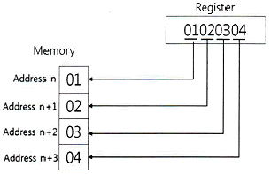
- little-word
- little-endian
- big-word
- big-endian
(정답률: 53%)
26. 현재 번지를 기준으로 이동한 변위로 표시되는 주소지정방식은?
- 상대번지 지정방식
- 절대번지 지정방식
- 간접번지 지정방식
- 직접번지 지정방식
(정답률: 61%)
27. 어떤 데이터를 8-비트로 표시하고 짝수 패리티(even parity) 비트를 첨가할 때 옳지 않은 것은?
- 001101100
- 110100110
- 11011010
- 011111111
(정답률: 45%)
28. 고속의 입ㆍ출력 장치에 사용되는 데이터 전송 방식은?
- 데이터 채널
- I/O 채널
- selector 채널
- multiplexer 채널
(정답률: 60%)
29. 입력단자가 하나이며 1이 입력될 때마다 출력단자의 상태가 바뀌는 플립플롭의 종류는?
- RS
- T
- D
- M/S
(정답률: 63%)
30. 직렬 전송을 하는 컴퓨터가 32bit의 레지스터와 1MHz 클럭을 가질 대 이 컴퓨터의 비트시간(bit time)과 워드 시간(word time)은? (단, 단위는 초(s)이다.)
- 10-6, 10-6×4
- 10-6, 10-6×32
- 1032, 1032×4
- 1032, 1032×32
(정답률: 59%)
31. 명령어의 구성 형태 중 하나의 오퍼랜드만 포함하고 다른 오퍼랜드나 결과 값은 누산기에 저장되는 명령어 형식은?
- 0-주소 명령어
- 1-주소 명령어
- 2-주소 명령어
- 3-주소 명령어
(정답률: 60%)
32. 스택의 구조가 다음 그림과 같을 때 ″POP A″ 명령을 수행한 후 스택포인터 및 A 레지스터의 값은?
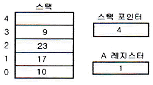
- 스택포인터 = 2, A 레지스터 = 9
- 스택포인터 = 2, A 레지스터 = 23
- 스택포인터 = 3, A 레지스터 = 9
- 스택포인터 = 2, A 레지스터 = 1
(정답률: 63%)
33. RISC방식 컴퓨터의 특징으로 옳은 것은?
- 주소지정방식이 다양하다.
- 명령어 길이가 가변적이다.
- 제어장치가 단순하고 속도가 빠르다.
- CISC구조보다 레지스터 수가 적다.
(정답률: 58%)
34. 기억장치의 구조가 stack 구조를 가질 때 가장 밀접한 관계가 있는 명령어는?
- one-address 명령어
- two-address 명령어
- three-address 명령어
- zero-address 명령어
(정답률: 48%)
35. 페이징(paging) 기법과 관계가 있는 것은?
- cache memory
- cycle stealing
- associative memory
- virtual memory
(정답률: 52%)
36. 서로 다른 17개의 정보가 있을 때 이 중에서 하나를 선택하려면 최소 몇 개의 비트가 필요한가?
- 3
- 4
- 5
- 17
(정답률: 67%)
37. 좌측 입력 레지스터에 D2E2가 입력되어 있다. 출력 레지스터의 내용이 00E2가 되도록 하려면 우측 입력 레지스터의 내용을 어떻게 하면 되는가?
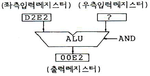
- 00D2
- 00FF
- E2E2
- E200
(정답률: 66%)
38. 기억장치 중 기억된 자료가 일정시간이 경과하면 소멸되는 장치는? (단, 별도의 보관 방법을 사용하지 않음)
- static memory
- core memory
- dynamic memory
- destructive memory
(정답률: 63%)
39. 사이클 타임이 750ns인 기억장치에서는 이론적으로 초당 몇 개의 데이터를 불러 낼 수 있는가?(오류 신고가 접수된 문제입니다. 반드시 정답과 해설을 확인하시기 바랍니다.)
- 약 750개
- 약 1330개
- 약 1.3×106개
- 약 750×106개
(정답률: 56%)
40. 다음 스위칭 회로의 논리식으로 옳은 것은?
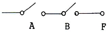
- F = A + B
- F = AㆍB
- F = A - B
- F = A / (B + A)
(정답률: 70%)
3과목: 마이크로전자계산기
41. 입출력장치와 비동기식 제어방식에서 가장 많이 사용되는 방식은
- open loop 방식
- closed loop 방식
- handshake 방식
- inter lock 방식
(정답률: 67%)
42. 입출력 인터페이스(I/O interface) 구성에 꼭 필요한 부분이라고 볼 수 없는 것은?
- 주소 버스
- 데이터 버스
- 제어 버스
- 명령어 디코더
(정답률: 63%)
43. DMA(Direct Memory Access) 방식에 대한 설명중 올바른 것은?
- 메모리의 내용이 누산기(Accumulator)만을 거쳐서 전송된다.
- CPU가 데이터 전송 과정을 직접 제어한다.
- 많은 양의 데이터를 고속으로 전송하는 데는 적합하지 않다.
- DMA 제어를 위한 별도의 하드웨어가 필요하다.
(정답률: 56%)
44. 스택에 관한 설명으로 틀린 것은?
- PUSH/POP 명령으로 수행된다.
- 서브루틴 방식에 사용된다.
- 인터럽트 방식에 사용된다.
- FIFO 형태로 동작한다.
(정답률: 66%)
45. 우선순위 인터럽트 체제에서 인트럽트 취급루틴(interrupt processing routine)을 수행하고 있을 때 DMA 요청이 있다면 컴퓨터는 어떤 처리를 하는가?
- 인터럽트 루틴을 처리한 후 DMA 요청을 받아 들인다.
- 인터럽트 처리를 끝낸 후 main 프로그램으로 제어를 옮긴 후 DMA 요청을 받아 들인다.
- DMA 요청을 곧바로 받아들인다.
- 인터럽트 우선순위와 DMA 순위를 비교한 후 우선처리 순위에 따라 처리한다.
(정답률: 44%)
46. 캐시 메모리에 대한 설명 중 틀린 것은?
- cache memory는 모든 처리가 하드웨어로 행해진다.
- cache memory는 CPU와 주기억장치 사이의 속도차이를 완화하기 위한 완충장치이다.
- cache memory와 주기억장치는 페이지 단위로 정보를 교환한다.
- cache memory는 번지공간(address space)이 메모리 공간(memory space) 보다 크다.
(정답률: 50%)
47. 동기형 계수기로 사용할 수 없는 것은?
- 링 카운터
- BCD 카운더
- 2진 카운터
- 2진 업다운 카운터
(정답률: 59%)
48. 비동기식(Asynchronous) 직렬(Serial) 입출력 인터페이스를 올바르게 설명한 것은?
- 데이터를 block으로 묶어서 전송하는 방식이다.
- 변복조장치(MODEM)을 사용한 장거리 데이터 전송은 불가능하다.
- 단위 데이터의 전후에 스타트(start) 신호와 스톱(stop) 신호가 필요하다.
- 고속 데이터 전송이 필요한 입출력 장치의 인터페이스에 적합하다.
(정답률: 67%)
49. 병렬 입ㆍ출력 인터페이스에서 데이터가 입ㆍ출력되었음을 알 수 있는 제어에 필요한 신호는 어느 것인가?
- reset 신호
- strobe 신호
- ALE 신호
- latch 신호
(정답률: 48%)
50. 어느 프로그램 중 0123번지에서 CALL A 명령이 있다. 이 CALL A를 수행한 수 stack에 기억된 값은?
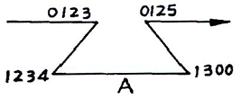
- 0123
- 0125
- 1234
- 1300
(정답률: 56%)
51. 마이크로컴퓨터시스템을 개발하는데 사용하는 디버거로 intel사의 등록 상표인 것은?
- JTAG
- socket
- In-Circuit Emulator
- PowerVT Terminal Emulator
(정답률: 58%)
52. 펌웨어(firmware) 메모리에 대한 설명 중 틀린 것은?
- ROM 속에 선택된 프로그램이나 명령을 영원히 내장하는 것을 펌웨어라고 한다.
- 일반적으로 주기억 장치보다는 가격도 저렴하고 용량도 크며, 하드웨어의 기능을 펌웨어로 변경하면 속도가 빨라진다.
- 반도체 메모리에 명령어가 영원히 저장되기 때문에 고체 상태 소프트웨어라고도 불린다.
- ROM으로 된 펌웨어는 전원이 차단되어도 내용이 지워지지 않으므로 하드웨어와 소프트웨어의 기능을 대신할 수 있다.
(정답률: 59%)
53. 입ㆍ출력 포트의 선택 장소가 메모리 셀 장소와 동일하며 같은 제어선을 갖는 디코더로서 메모리 또는 입ㆍ출력 포트를 선택하는 방식은?
- Isolated I/O
- Memory Mapped I/O
- 동기식 I/O
- 비동기식 I/O
(정답률: 60%)
54. 인터럽트(Interrupt)가 발생했을 경우 이를 처리하기 전에 그 내용을 기억시킬 필요가 없는 것은?
- Accumulator
- State Register
- Program Counter
- Instruction Register
(정답률: 46%)
55. 주소 선(Address line)이 16개인 CPU의 직접 엑세스가 가능한 메모리 공간은 몇 Kbyte인가?
- 32
- 64
- 128
- 256
(정답률: 57%)
56. 범용 직렬 통신 장치인 8251에 대한 설명으로 틀린 것은?
- 양방향 통신을 하기 위하여 더블 버퍼로 구성되어 있다.
- 전송 버퍼, 수신 버퍼가 있다.
- 동기식 전송만 가능하다.
- 전송 속도는 DC에서 최대 64Kbps까지 가능하다.
(정답률: 45%)
57. 그림과 같은 방식으로 디스플레이에 문자를 표시하기 위해 사용하는 ROM의 역할은?
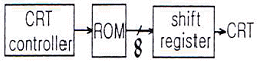
- 문자 패턴을 기억한다.
- ASCII code를 기억한다.
- 제어 프로그램을 기억한다.
- 화면의 커서(Cursor)의 위치를 기억한다.
(정답률: 67%)
58. 인터럽트 요구 신호는 마이크로컴퓨터의 어는 부분과 관련이 있는가?
- 주변 버스(peripheral bus)
- 제어 버스(contro bus)
- 주소 버스(address bus)
- 데이터 버스(data bus)
(정답률: 69%)
59. 함수연산 인스트럭션을 나타낸 것은?
- 자료전달 인스트럭션
- 제어 인스트럭션
- 입출력 인스트럭션
- 시프트 인스트럭션
(정답률: 43%)
60. 마이크로컴퓨터 시스템과 외부회로 사이의 데이터 전달 입출력(I/O) 방식이 아닌 것은?
- Programmed I/O
- interrupt I/O
- DMA(direct memory access)
- paged I/O
(정답률: 55%)
4과목: 논리회로
61. 다음 논리회로의 명칭은?
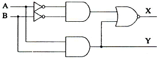
- 디코더
- 인코더
- 반가산기
- 반감산기
(정답률: 49%)
62. 다음 회로에 관한 설명으로 옳은 것은?
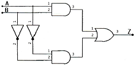
- 출력 Z=X+Y와 같다.
- 반감산기 회로이다.
- 일치회로이다.
- 덧셈의 캐리를 발생하는 회로이다.
(정답률: 50%)
63. 다음 회로와 같은 결과를 얻을 수 있는 게이트(gate)는 어느 것인가?
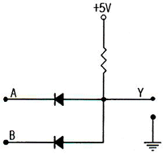
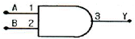
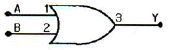
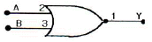
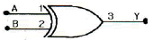
(정답률: 50%)
64. 다음은 어떤 플립플롭에 적용되는 여기표(excitation table)인가?
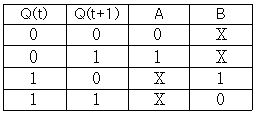
- JK 플립플롭
- RS 플립플롭
- D 플립플롭
- T 플립플롭
(정답률: 44%)
65. 7-segment 표시기로 사용되는 것은?
- 멀티플렉서
- 다이오드 매트릭스
- 인코더
- 디코더
(정답률: 55%)
66. 다음 16진수 곱셈의 결과는?
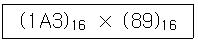
- (11467)16
- (17A67)16
- (E03B)16
- (E6C7)16
(정답률: 56%)
67. 다음 회로에서 출력 C에 대한 논리식으로 옳은 것은?
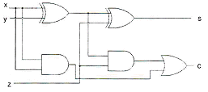
- C = x⊕y⊕z
- C = xy+(x⊕y)z
- C = xy+(x⊕z)y
- C = x+y+(x⊕y)z
(정답률: 49%)
68. 다음 논리식을 최대항으로 나타낸 것은?
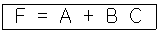
- F = (A+B+C)(A'+B+C)(A+B+C')
- F = (A+B+C)(A+B'+C)(A+B+C')
- F = (A+B+C)(A+B+C')(A+B'+C)(A'+B+C')
- F = (A+B+C)(A+B+C')(A+B'+C)(A'+B+C')
(정답률: 38%)
69. 다음과 같은 상태도를 갖는 카운터를 설계하려고 한다. 클럭에 동기화된 세 개의 T플립플롭 A, B, C를 이용할 때 T플립플롭 A의 입력 TA로 옳은 것은?
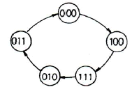
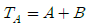
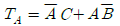
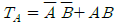
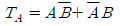
(정답률: 31%)
70. 10진수 6을 excess-3 코드로 변환한 결과가 옳은 것은?
- 0110
- 0111
- 1000
- 1001
(정답률: 63%)
71. 다음 중 순서논리회로의 필수 설계 구성요소가 아닌 것은?
- 입력
- 출력
- 상태 천이
- 상태 축소
(정답률: 52%)
72. 다음 중 Parity check에 의해 에러(error)를 검출하고, 이를 다시 교정할 수 있는 코드는?
- EBCDIC
- ASCII
- Hamming
- Gray
(정답률: 65%)
73. A1, B1은 첫 번째 A와 B의 입력 값이고, A2, B2는 두 번째 A와 B의 입력 값일 경우 (A1,A2)=>(A2,B2) 형식으로 표현한다. A+B를 계산하는 4 bit ripple carry adder의 carry out의 최대 지연시간을 측정하기 위해서는 입력 패턴을 어떻게 주어야 하는가?
- (0000, 0111) => (0000, 1000)
- (1010, 0111) => (1011, 0111)
- (1010, 0101) => (1011, 0101)
- (1111, 0000) => (1111, 1111)
(정답률: 46%)
74. 다음 중 논리 버퍼(buffer)의 기능으로 옳은 것은?
- 논리 0을 입력했을 때 출력은 하이임피던스(high impedance) 상태가 된다.
- 지연 소자로서 기능을 한다.
- 입출력의 논리 변화는 없으나 입력되는 신호의 크기가 감소되어 출력된다.
- 버퍼를 사용하지 않았을 때 보다 부하 구동 능력이 다소 감소된다.
(정답률: 46%)
75. 다음 중 전하가 방전되면 기억된 정보를 읽어버리게 되므로 일정한 주기마다 계속해서 재충전해야 하는 소자는?
- DRAM
- SRAM
- SAC
- EROM
(정답률: 62%)
76. 다음은 16진수 뺄셈이다. □안의 값은?
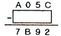
- 24BA
- 24CA
- 2368
- 246A
(정답률: 44%)
77. 직렬 또는 병렬방식 레지스터 전송에 대한 설명으로 옳지 않은 것은?
- 직렬방식은 데이터를 전송할 때 많은 시간이 필요하다.
- 병렬방식은 하드웨어 규모가 간단하다.
- 직렬방식은 클록펄스에 의해 한번에 1bit씩 자리 이동한다.
- 병렬방식은 모든 bit의 데이터를 한번의 클록펄스에 모두 전송시킨다.
(정답률: 55%)
78. 일반적으로 Gate당 전력소모[mW]가 가장 많은 소자는?
- Standard TTL
- Schottky TTL
- ECL
- CMOS
(정답률: 50%)
79. 다음 논리함수식 A(A+B+C+D)를 간략화 하면?
- 1
- 0
- A
- b
(정답률: 56%)
80. 다음 불대수의 논리식으로 틀린 것은?
- A(A+B) = AB
- A+AB = A
- A(A′+B) = AB
- A+A′B = A+B
(정답률: 47%)
5과목: 데이터통신
81. 양자화 스텝수가 5비트이면 양자화 계단수는?
- 16
- 32
- 64
- 128
(정답률: 53%)
82. 전송제어 프로토콜 중 문자방식 프로토콜에서 전송끝 및 데이터링크 초기화 부호는?
- SOH
- ACK
- SYN
- EOT
(정답률: 50%)
83. 블루투스(Bluetooth)의 프로토콜 스택에서 물리 계층을 규정하는 것은?
- RF
- L2CAP
- HID
- RFCOMM
(정답률: 39%)
84. 사용 대역폭이 4kHz이고 16진 PSK를 사용한 경우 데이터 신호속도(kbps)는?
- 4
- 8
- 16
- 64
(정답률: 30%)
85. HDLC의 ABM(Asynchronous Balanced Mode) 동작모드의 부분집합으로 X.25의 링크 계층에서 사용되는 프로토콜은?
- LAPB
- LAPD
- LAPX
- LAPM
(정답률: 49%)
86. 10.0.0.0 네트워크 전체에서 마스크 값으로 255.240.0.0를 사용할 경우 유효한 서브네트 ID는?
- 10.240.0.0
- 10.0.0.32
- 10.1.16.3
- 10.29.240.0
(정답률: 50%)
87. IEEE 802.5는 무엇에 대한 표준인가?
- 이더넷
- 토큰링
- 토큰버스
- FDDI
(정답률: 54%)
88. 프로토콜의 기본 구성 요소가 아닌 것은?
- 개체(entity)
- 구문(syntax)
- 의미(semantic)
- 타이밍(timing)
(정답률: 44%)
89. 전송하려는 부호어들의 최소 해밍 거리가 7일 때, 수신시 정정할 수 있는 최대 오류의 수는?
- 2
- 3
- 4
- 5
(정답률: 51%)
90. HDLC 프레임 구성에서 프레임 검사 시퀀스(FCS) 영역의 기능으로 옳은 것은?
- 전송 오류 검출
- 데이터 처리
- 주소 인식
- 정보 저장
(정답률: 62%)
91. 주파수 분할 다중화기(FDM)에서 부채널 간의 상호 간섭을 방지하기 위한 것은?
- 가드 밴드(Guard Band)
- 채널(Channel)
- 버퍼(Buffer)
- 슬롯(Slot)
(정답률: 69%)
92. HDLC(High-level Data Link Control) 프레임 형식으로 옳은 것은?
- 플래그, 제어영역, 주소영역, 정보영역, FCS, 플래그
- 플래그, 주소영역, 제어영역, 정보영역, FCS, 플래그
- 플래그, 주소영역, 정보영역, 제어영역, FCS, 플래그
- 플래그, 정보영역, 제어영역, 주소영역, FCS, 플래그
(정답률: 60%)
93. OSI 7계층에서 네트워크 논리적 어드레싱과 라우팅 기능을 수행하는 계층은?
- 1계층
- 2계층
- 3계층
- 4계층
(정답률: 47%)
94. 하나의 정보를 여러 개의 반송파로 분할하고, 분할된 반송파 사이의 주파수 간격을 최소화하기 위해 직교 다중화해서 전송하는 통신방식으로, 와이브로 및 디지털 멀티미디어 방송 등에 사용되는 기술은?
- TDM
- DSSS
- OFDM
- FHSS
(정답률: 46%)
95. 채널 대역폭이 150[kHz]이고 S/N비가 15일 때 채널용량[kbps]은?
- 150
- 300
- 600
- 750
(정답률: 50%)
96. 1000BaseT 규격에 대한 설명으로 틀린 것은?
- 최대 전송속도는 1000[kbps]이다.
- 베이스 밴드 전송 방식을 사용한다.
- 전송 매체는 UTP(꼬임쌍선)이다.
- 주로 이더넷(Ethernet)에서 사용된다.
(정답률: 45%)
97. 데이터 변조속도가 3600[baud]이고 쿼드비트(Quad bit)를 사용하는 경우 전송속도(bps)는?
- 14400
- 10800
- 9600
- 7200
(정답률: 50%)
98. 원천부호화(source coding) 방식에 속하지 않는 것은?
- DPCM
- DM
- LPC
- FDM
(정답률: 41%)
99. 2 out of 5 부호를 이용하여 에러를 검출하는 방식은?
- 패리티 체크 방식
- 군계수 체크 방식
- SQD 방식
- 정 마크(정 스페이스) 방식
(정답률: 42%)
100. 디지털 통신망을 구성하는 디지털 교환기 사이에 클록 주파수의 차이가 생기면 데이터의 손실이 발생할 수 있는데 이를 무엇이라 하는가?
- 슬립(slip)
- 폴링(polling)
- 피기백(piggyback)
- 인터리빙(interleaving)
(정답률: 53%)